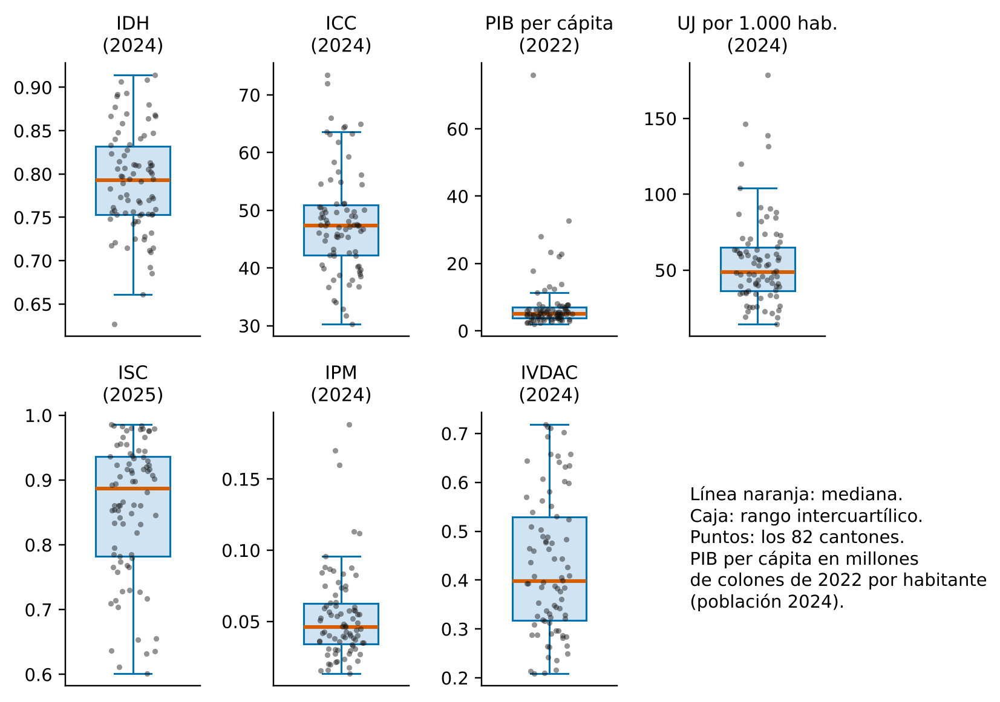
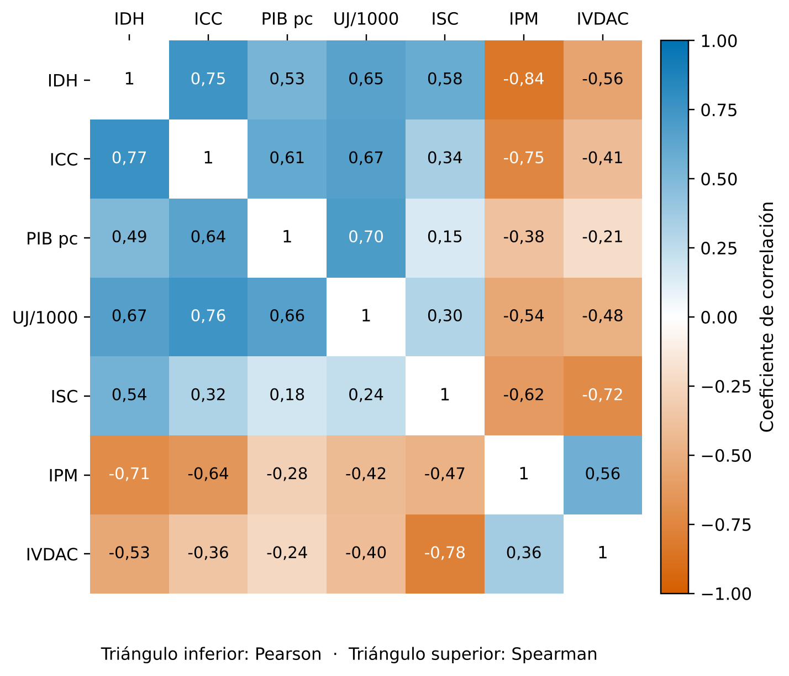
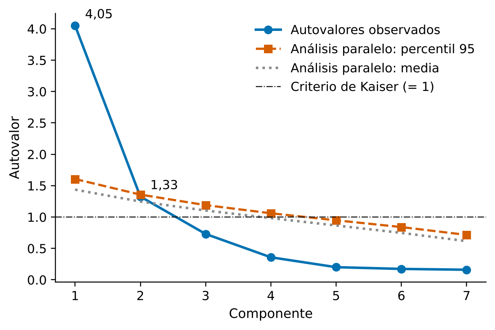
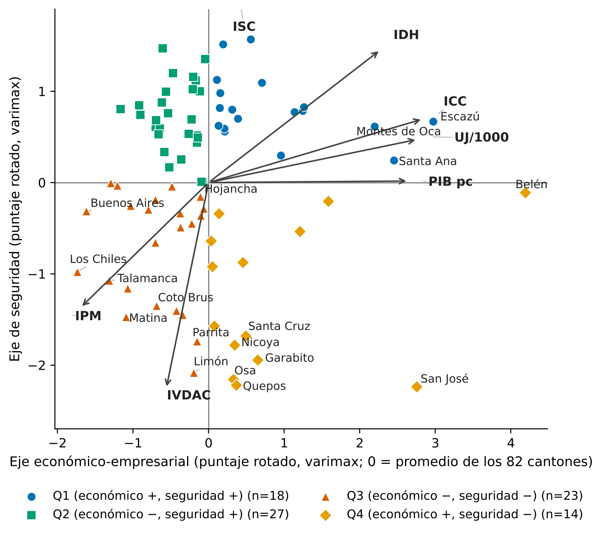
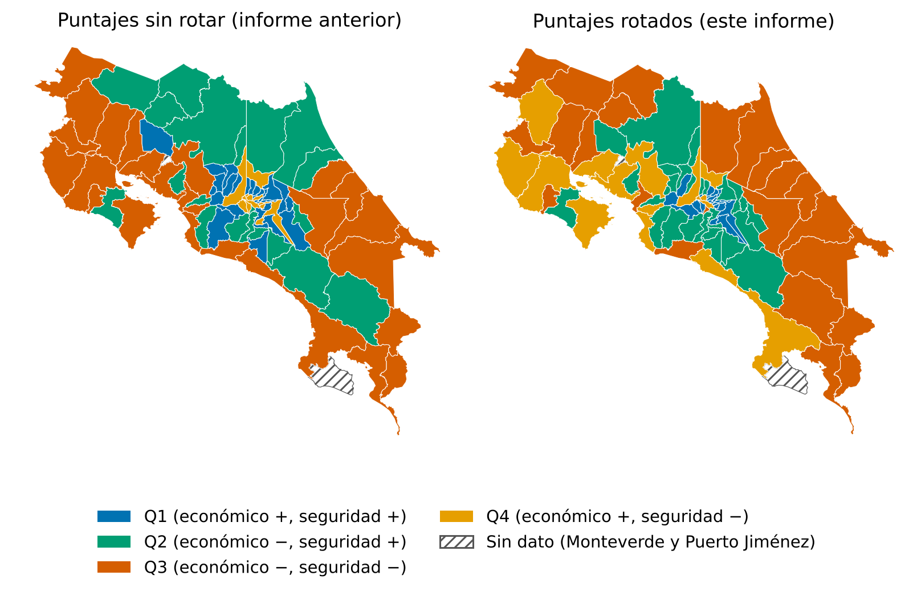
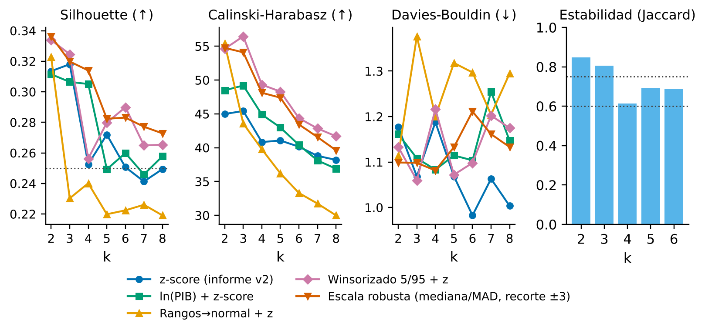
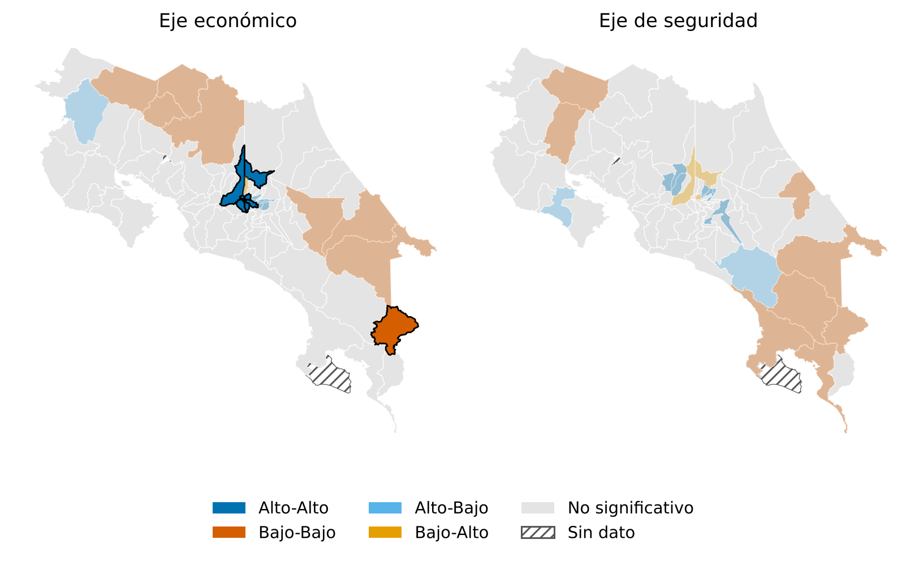
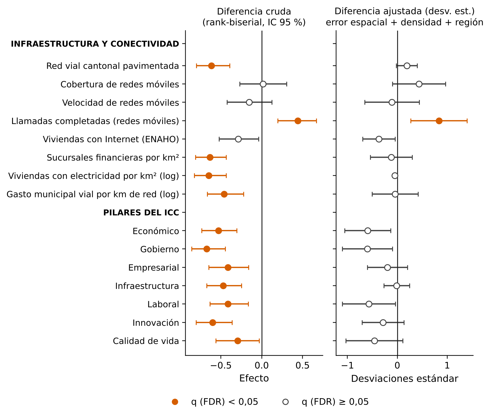
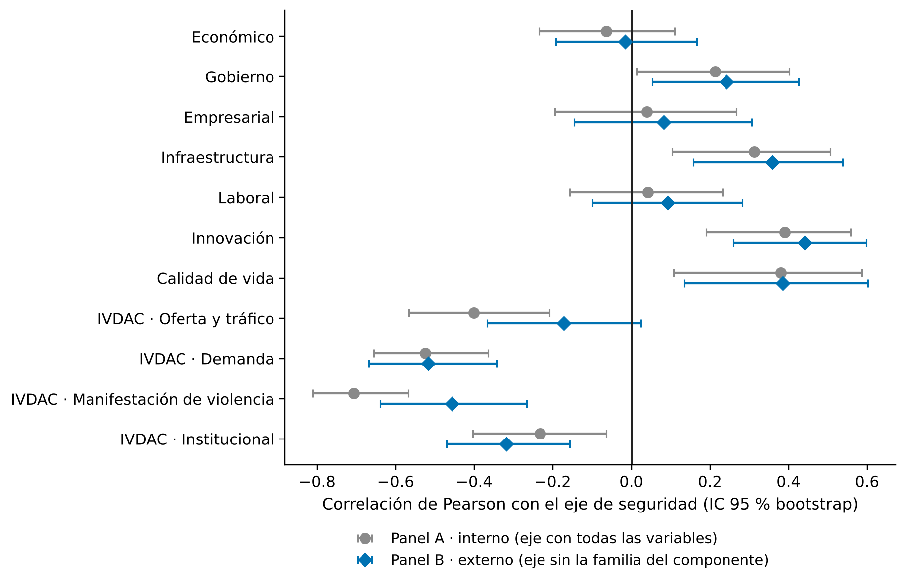
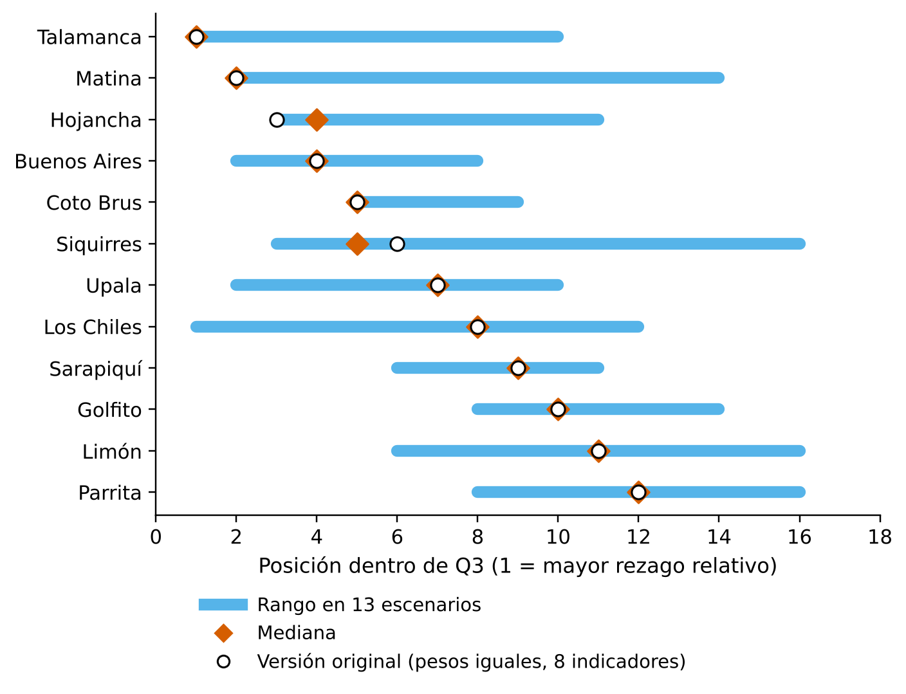

Informe técnico · versión 3 (revisión mayor tras evaluación metodológica externa) · 2 de octubre de 2026
Perfiles cantonales de desarrollo, competitividad y seguridad en Costa Rica
Análisis exploratorio de 82 cantones con datos de 2022 a 2025.
MSc. Agustín Gómez Meléndez, investigador · Centro de Investigación Observatorio del Desarrollo (CIOdD), Universidad de Costa Rica
Resumen ejecutivo
Costa Rica carece de una lectura conjunta de cómo se relacionan desarrollo económico y seguridad en sus cantones. Este informe examina esa premisa de forma exploratoria, como insumo para diagnósticos territoriales posteriores y no como evaluación de desempeño ni base de asignación de recursos.
- Datos. Cuatro fuentes (PNUD, Escuela de Economía-UCR y dos series del BCCR) integradas en siete variables para 82 cantones, con años de observación entre 2022 y 2025.
- Dos dimensiones. Explican 76,8 % de la varianza: económico-empresarial (43,5 % tras la rotación; λ₁ = 4,05, muy por encima del análisis paralelo) y de seguridad ciudadana (33,3 %; exploratoria: λ₂ = 1,33 supera Kaiser y la media del análisis paralelo, 1,25, pero no su percentil 95, 1,36).
- Cuadrantes. Q1 (n = 18), Q2 (27), Q3 (23) y Q4 (14), relativos al promedio de los 82 cantones. Al corregir la versión 2 (puntajes sin rotar), 40 cantones cambian de cuadrante; 36 están a menos de 0,25 DE de algún umbral, por lo que la pertenencia individual debe leerse como probabilística (probabilidad media por remuestreo: 0,90; 4 cantones por debajo de 0,60).
- Q3. 23 cantones periféricos que ocupan 52,6 % del territorio y 23,5 % de la población de la muestra, con valores medianos menores en pavimentación, sucursales financieras, electricidad por km², gasto vial y los siete pilares del ICC. Esos indicadores de infraestructura son en esencia medidas de densidad territorial (ρ con ln de la densidad entre 0,62 y 0,99, salvo conectividad móvil): ajustadas por densidad y región, las brechas se aproximan a cero.
- K-means (k = 4). No corrobora los cuadrantes: silhouette 0,25, ARI = 0,30 y NMI = 0,41. Se interpreta como ejercicio complementario.
- Dependencia espacial. I de Moran de 0,49 (eje económico) y 0,36 (eje de seguridad), p < 0,001: los cantones no son observaciones independientes.
Datos y métodos
Siete variables, cada una en su último año disponible: IDH 2024, ICC 2024, PIB per cápita 2022, UJ por 1.000 habitantes 2024, ISC 2025, IPM 2024 e IVDAC 2024. Monteverde y Puerto Jiménez quedan fuera por falta de cobertura del ICC. Ver Fuentes y método.
- PCA sobre la matriz de correlaciones, con KMO, Bartlett, análisis paralelo de Horn y varimax con normalización de Kaiser; puntajes calculados directamente en el espacio rotado (Srot = Z V Λ−1/2 R), con signo orientado por el ICC (eje económico) y el ISC (eje de seguridad).
- Cuadrantes por signo de cada eje respecto del promedio de los 82 cantones, con estabilidad por remuestreo, sensibilidad S1–S7 y exclusión de un cantón.
- K-means con k = 2 a 8 (cinco transformaciones, 300 inicios), Gower jerárquico, ARI y NMI frente a los cuadrantes.
- Ejercicio 2 (Q3 frente al resto): Mann-Whitney, rank-biserial, TOST de equivalencia, ajuste por densidad y región (OLS HC3 y modelo de error espacial), exclusión de un dominio para evitar circularidad.
- Dependencia espacial: I de Moran, LISA con FDR (9.999 permutaciones), ponderación por población.
- Índice de rezago relativo con 13 escenarios de sensibilidad.
Parámetros: semilla maestra 20261002; bootstrap de 5.000 remuestreos (2.000 para cargas, 1.000 para pertenencia a cuadrantes, 400 para estabilidad de K-means).
Hallazgos del ejercicio 2 (Q3 frente al resto) y del eje de seguridad
- Ajustadas por densidad y región, las brechas de pavimentación, sucursales, electricidad y gasto vial se aproximan a cero (−0,12 a 0,19 DE). Persisten con claridad una mayor proporción de llamadas completadas (+0,83 DE; q = 0,031) y, de forma sugestiva pero no robusta, menor acceso a Internet (−0,37 DE; q = 0,075) y menores pilares Económico y de Gobierno (≈ −0,60 DE; q = 0,069).
- La cobertura móvil es estadísticamente equivalente entre grupos dentro de ±0,5 DE (TOST, p = 0,026).
- Sin circularidad (eje de seguridad construido sin la familia de variables asociada), los pilares Innovación, Calidad de vida e Infraestructura del ICC se asocian positivamente con el eje de seguridad (r = 0,36 a 0,44); Económico, Empresarial y Laboral no muestran asociación.
- Entre los componentes del IVDAC, Demanda (r = −0,52) y Manifestación de violencia (−0,46) son los más asociados, con intervalos que se solapan: no puede afirmarse que uno pese más que el otro.
Tablas de referencia (CSV)
| Contenido | Archivo |
|---|---|
| Estadística descriptiva | T01_descriptivos.csv |
| Valores extremos (Tukey) | T01b_extremos_tukey.csv |
| 21 correlaciones (Pearson/Spearman, IC, FDR) | T02_correlaciones_21_pares.csv |
| KMO | T03a_kmo.csv |
| Autovalores y análisis paralelo | T03b_autovalores_analisis_paralelo.csv |
| Cargas rotadas y comunalidades | T03c_cargas_comunalidades.csv |
| Transición de cuadrantes (sin rotar → rotado) | T04a_matriz_transicion.csv |
| Cuadrantes cantón por cantón | T04b_cuadrantes_canton_por_canton.csv |
| Estabilidad de la pertenencia a cuadrante (bootstrap) | T05c_estabilidad_cuadrante_bootstrap.csv |
| Selección de k en K-means | T06a_seleccion_k.csv |
| Q3 frente al resto: infraestructura | T08a_q3rot_vs_resto_infraestructura.csv |
| Q3 frente al resto: pilares del ICC | T08b_q3rot_vs_resto_pilares.csv |
| Brechas ajustadas por densidad y región: infraestructura | T10a_ajustado_infra.csv |
| Brechas ajustadas: pilares | T10b_ajustado_pilares.csv |
| Eje de seguridad: descomposición interna | T11a_panelA_interno.csv |
| Eje de seguridad: comparación externa | T11b_panelB_externo.csv |
| I de Moran global | T14_moran_global.csv |
| LISA por cantón | T15_lisa.csv |
| Índice de rezago relativo (82 cantones) | T16c_indice_rezago_82.csv |
| Sumas SHA-256 de los archivos de entrada | A03_hashes_archivos_fuente.csv |
El conjunto completo está en informe/resultados_referencia/tablas/.
Figuras










Reproducir el informe
git clone https://github.com/USUARIO/idh-cantonal-costa-rica.git && cd idh-cantonal-costa-rica
python -m venv .venv && source .venv/bin/activate
pip install -r requirements.txt
python informe/run_all.py # scripts 00 a 09
python informe/scripts/10_verificar_reproduccion.py # compara con las tablas de referenciaEl script 10_verificar_reproduccion.py ejecuta todo desde cero en un directorio temporal y compara cada tabla con informe/resultados_referencia/; 09_validacion_independiente.py reimplementa con NumPy/SciPy los cálculos centrales. Son dos controles distintos: el primero demuestra que el código reproduce las cifras; el segundo, que las funciones de librería producen lo mismo que una implementación independiente. Ninguno, por sí solo, demuestra que la metodología sea la adecuada.
Los resultados con simulación (bootstrap, permutaciones, K-means) dependen de la semilla y de las versiones de las librerías; las versiones exactas están en requirements.txt.